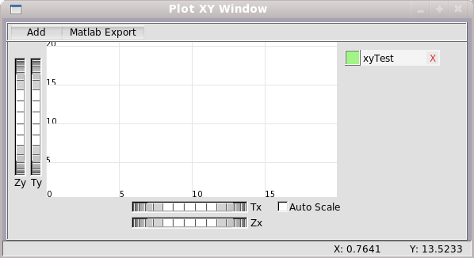

Benzetim sonuçlarý iki tip grafik penceresinde görselleþtirebilirsiniz.
Plot penceresi sonuçlarýn zamana göre deðiþimleri iki boyutlu grafiksel olarak çizilir. Plot XY penceresinde ise benzetim sonuçlarýnýn birbirlerine göre deðiþimleri çizilir.
Plot penceresi, ana pencereden Windows menüsü altýndaki Plot Window'a týklanarak açýlýr.

Plot Penceresi iþlemler listesi:
- Plot penceresine kayýt deðiþkeni ekleme
- Plot penceresinden kayýt deðiþkeni çýkarma
- Kayýt deðiþkeni rengini deðiþtirme
- Grafik üzerinde yakýnlaþtýrma, uzaklaþtýrma, gezinme
- Otomatik oran ve Otomatik öteleme
- Matlab çýktýsý alma
Plot penceresindeki Add butonuna týklanýr. Açýlan diyalog penceresindeki kayýt deðiþkeni listesinden eklenecek deðiþkenler seçilir.
- Add - Seçilen deðiþkenler plot penceresine ekler.
- Add All - Bütün deðiþkenleri plot penceresine ekler.
- Cancel - Seçim iþlemini iptal eder.
Plot penceresinde kayýt deðiþkenini kaldýrmak için sað tarafta yer alan ilgili deðiþkenin üzerindeki düðmesine týklanýr.
Kayýt deðiþkeninin rengini deðiþtirmek için sað tarafta yer alan ilgili deðiþkenin üzerindeki renk kutucuðuna týklanýr. Açýlan renk diyalog penceresinden yeni renk seçimi yapýlýr.
Plot penceresinde grafik üzerinde yakýnlaþtýrma, uzaklaþtýrma ve gezinme yapabilirsiniz.
- Yakýnlaþtýrma / Uzaklaþtýrma - Zx ve Zy thumbwheel düðme takýmý kullanýlarak x ve y ekseninde yakýnlaþtýrma ve uzaklaþtýrma yapýlýr.
Farenin sað tuþu ile sürükle-býrak yapýlarak istenilen alana da yakýnlaþtýrma yapýlýr. Ayrýca farenin tekerleði ile de yakýnlaþtýrma ve uzaklaþtýrma yapýlýr.
- Gezinme - Tx ve Ty thumbwheel düðme takýmý ile x ve y ekseni üzerinde gezinme yapýlýr.
Farenin sol tuþu ile sürükle-býrak yapýlarak istenilen eksende gezinme yapýlýr.
Otomatik oran - Kayýt deðiþkeninin baþlangýç anýndan son ana kadar bütün deðerleri grafik ekranýna sýðdýrýr.
Otomatik Öteleme - Kayýt deðiþkenin son anlardaki sonuçlarý grafik ekranýnda gösterilir.
Matlab Export düðmesine basýlarak plot penceresinde gösterilen kayýt deðiþkenlerinin verileri Matlab formatýnda kayýt edilir.
Plot XY penceresi, ana pencereden Windows menüsü altýndaki Plot XY Window'a týklanarak açýlýr. Plot XY penceresi iþlemler listesi otomatik öteleme hariç plot penceresi ile aynýdýr.
